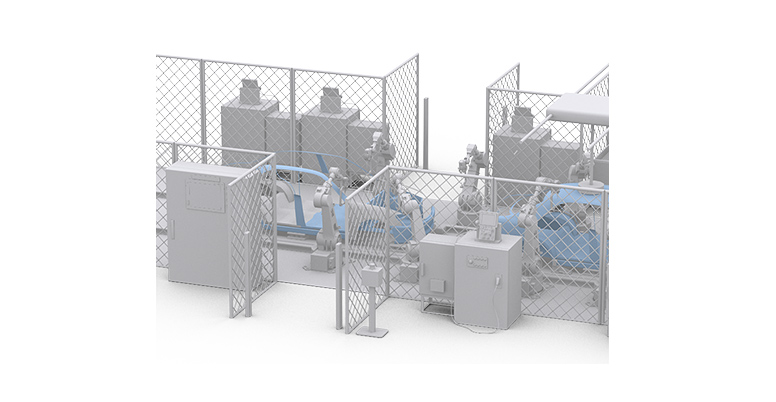
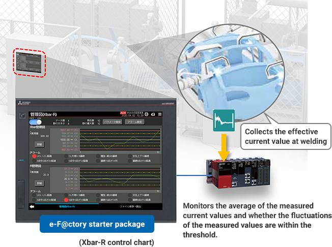
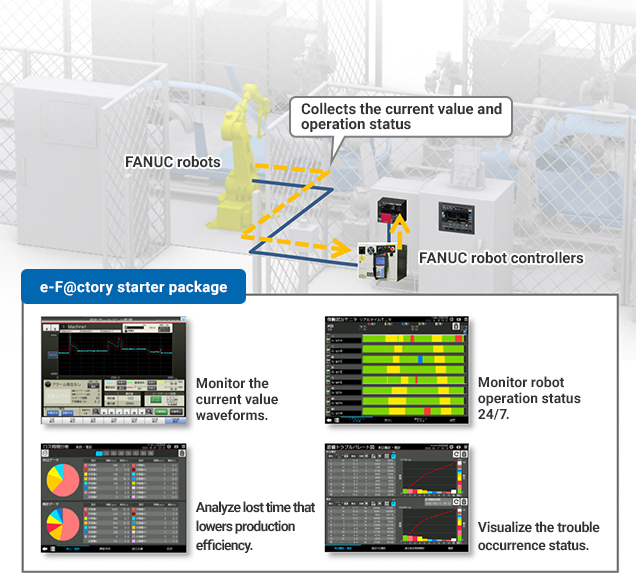
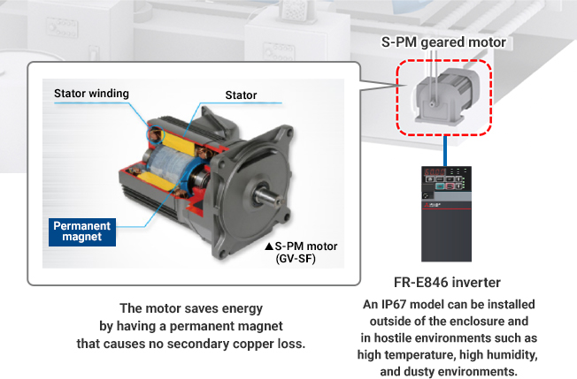
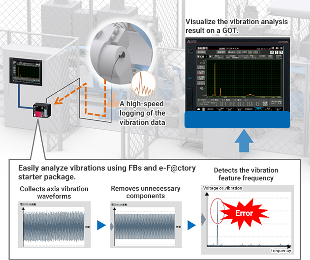

Solusi
Manufaktur Otomotif

Pengelasan
- Menjaga dan mengelola kualitas pengelasan dengan memantau kondisi pengelasan secara konstan
- Meningkatkan tingkat operasi dengan memantau operasi robot pengelasan
- Meningkatkan efisiensi energi conveyor belt dan mengurangi biaya dengan menghilangkan enclosure
- Mengumpulkan dan menganalisis data melalui PLC untuk pemeliharaan preventif

Solusi untuk Masalah
| Masalah | Solusi |
|---|---|
| Menjaga dan mengelola kualitas pengelasan dengan memantau kondisi pengelasan secara konstan | Memantau fluktuasi kualitas dan alarm dengan bagan kendali Xbar-R. |
| Meningkatkan tingkat operasi dengan memantau operasi robot pengelasan | Memvisualisasikan status operasi robot dan mengidentifikasi penyebab masalah dengan paket pemula e-F@ctory. |
| Meningkatkan efisiensi energi conveyor belt dan mengurangi biaya dengan menghilangkan enclosure | Mengontrol conveyor belt dengan motor roda gigi S-PM yang berperforma tinggi dan hemat energi. |
| Mengumpulkan dan menganalisis data melalui PLC untuk pemeliharaan preventif | Mengumpulkan data getaran reducer yang rentan dan menganalisis data yang dikumpulkan dengan PLC. |
Masalah
Menjaga dan mengelola kualitas pengelasan dengan memantau kondisi pengelasan secara konstan
Solusi
Mengumpulkan dan menganalisis nilai arus efektif saat pengelasan dan memvisualisasikan kondisi pengelasan. Menjaga dan mengelola kualitas pengelasan dengan memantau fluktuasi kualitas atau alarm secara real time dengan bagan kendali Xbar-R.
- Mengumpulkan dan menganalisis nilai arus efektif saat pengelasan, dan memvisualisasikan kondisi pengelasan pada GOT.
- Mengelola proses produksi dan menjaga kualitas pengelasan dengan memantau fluktuasi kualitas secara real time dengan bagan kendali Xbar-R dari paket pemula e-F@ctory.
Poin
- Membuat bagan kendali dengan fungsi bagan kendali (Xbar-R) dari paket pemula e-F@ctory secara real time dan mengirim umpan balik ke area produksi.

Daftar Produk


Masalah
Meningkatkan tingkat operasi dengan memantau operasi robot pengelasan
Solusi
Mengumpulkan nilai arus sumbu dan data status operasi dengan menghubungkan pengontrol robot FANUC ke PLC. Meningkatkan tingkat operasi dengan menganalisis data yang dikumpulkan dan memvisualisasikan kondisi saat ini.
- Menghubungkan pengontrol robot ke modul Ethernet, mengumpulkan data yang diperlukan untuk memantau status operasi (nilai arus sumbu dan kesalahan, status operasi) dari pengontrol, dan memanfaatkan data yang dikumpulkan dengan paket pemula e-F@ctory.
- Menganalisis data yang dikumpulkan dan memvisualisasikan kondisi untuk meningkatkan tingkat operasi dengan paket pemula e-F@ctory.
Poin
- Mengumpulkan dan memantau nilai arus setiap sumbu dan data status operasi hingga delapan robot pada GOT dengan menghubungkan pengontrol robot dan seri MELSEC iQ-R melalui Ethernet.
- Mendeteksi kesalahan yang sulit ditemukan dengan pemantauan ambang batas sederhana, memantau status operasi 24/7, dan mengidentifikasi penyebab masalah dengan memantau status terjadinya masalah.

Daftar Produk
Masalah
Meningkatkan efisiensi energi conveyor belt dan mengurangi biaya dengan menghilangkan enclosure
Solusi
Menghemat energi dengan menggunakan motor roda gigi S-PM yang berperforma tinggi dan hemat energi untuk mengontrol conveyor belt. Menghemat biaya dengan menggunakan model IP 67 dari inverter yang dapat dipasang di berbagai lingkungan, termasuk di luar enclosure.
- Motor S-PM adalah motor sinkron yang memiliki magnet permanen kuat (magnet ferit berperforma tinggi) di rotornya.
Tidak seperti motor induksi, motor ini tidak menunjukkan slip (penurunan kecepatan rotasi pada beban yang meningkat), dan cocok untuk kontrol kecepatan akurasi tinggi. - Model IP 67 dari inverter meningkatkan ketahanan lingkungan dan memungkinkan pemasangan di berbagai peralatan dan lingkungan, termasuk lingkungan korosif dan suhu udara sekitar antara -20°C dan 60°C.
Poin
- Motor S-PM tidak menyebabkan kehilangan tembaga sekunder dan dapat menjaga efisiensi motor yang tinggi. Motor ini membutuhkan lebih sedikit energi untuk menerapkan gaya yang sama, sehingga menghemat energi.
- Inverter model IP67 dapat dipasang di luar enclosure, memungkinkan pemasangan di berbagai lingkungan.

Daftar Produk
Masalah
Mengumpulkan dan menganalisis data melalui PLC untuk pemeliharaan preventif
Solusi
Mengumpulkan data getaran reducer yang rentan, menganalisis data yang dikumpulkan oleh PLC, dan mendeteksi frekuensi abnormal, memungkinkan pemeliharaan preventif.
- FB (blok fungsi) disediakan untuk menganalisis getaran dengan FFT (transformasi Fourier cepat) dan filter digital.
- Menganalisis data getaran dan memantau ambang batas dengan data getaran yang dikuantifikasi, memungkinkan pemantauan kondisi peralatan memanfaatkan data getaran.
Poin
- Gunakan FB apa pun untuk membuat program analisis getaran, dan buat analisis dan diagnosis getaran asli untuk peralatan Anda.
- Buat analisis getaran sederhana dengan investasi awal yang lebih sedikit.
